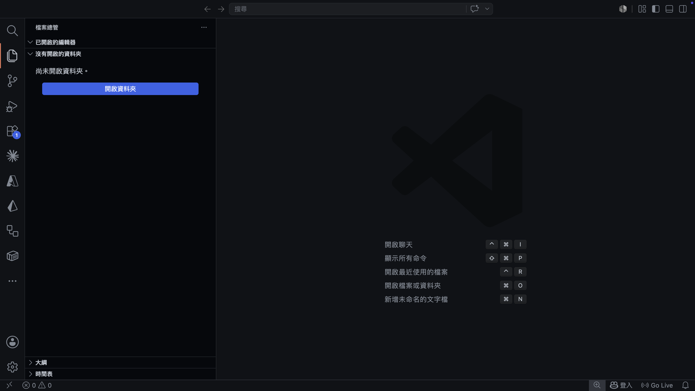
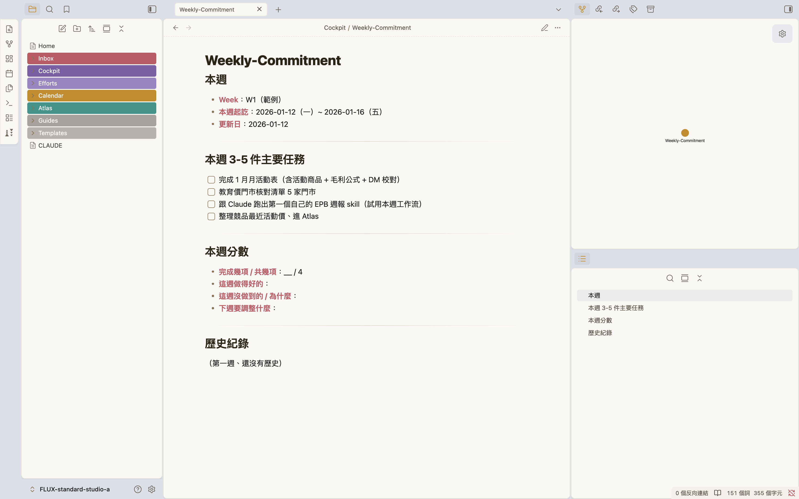
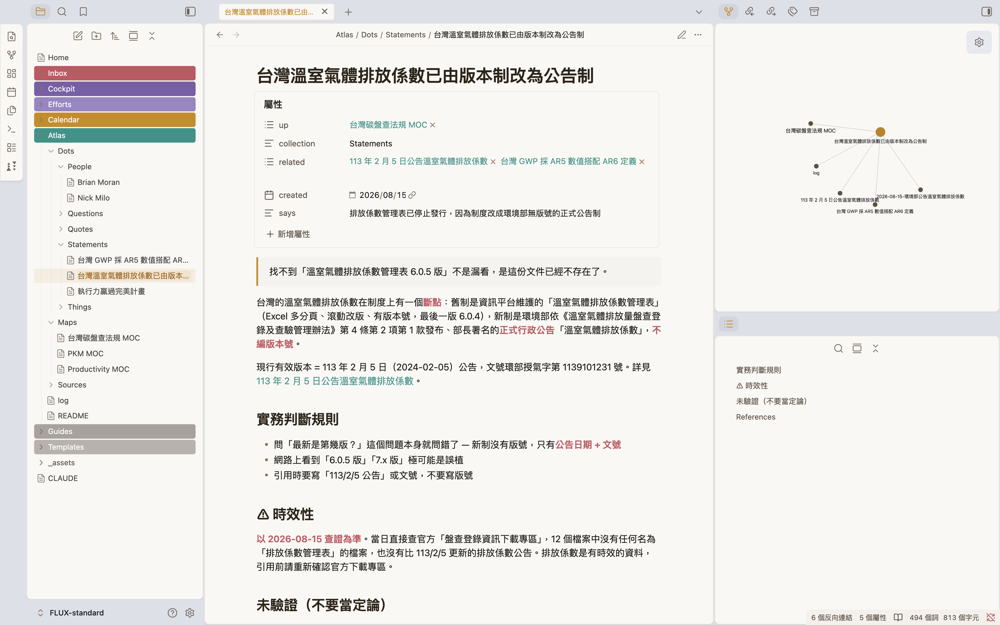
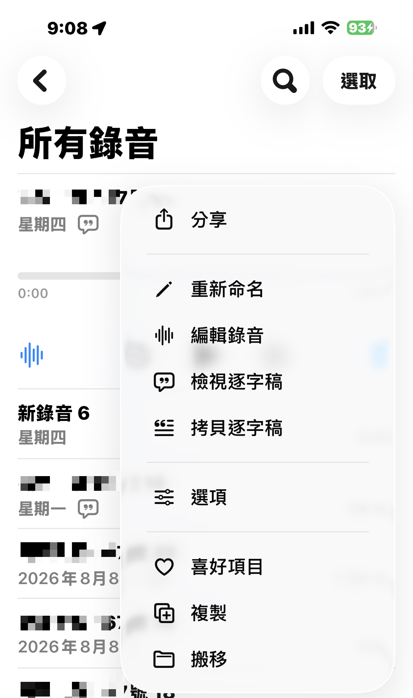

東海大學. ／ 永續處
DAY 1 / 2永續處 ＋ 產學夥伴
建立你的
AI 工作系統。
AI 工作系統。
AI 工作流工作坊 ｜ Day 1 / 2 —— 一個記得你的助手 · 每天的開工收工 · 一座查得到出處的知識庫。
講師 余文皓
匯流顧問有限公司
2026 / 08 / 17
東海大學永續處 · AI 工作流工作坊 · D1
BLOCK 0開場
你缺的不是工具、
是系統。
是系統。
開場 · 15 MIN
2 / 92
你們填的6/10 MIRO 工作盤點 · 原卡
盤點板攤開 —— 這是你們的一週。
柏源｜讀：報告書＋法規 PDF、問卷 Excel、會議錄音 → 產：文稿 Word、簡報 PPT
芊臻｜讀：案例／法規／標準指南、溫盤系統 → 產：係數選用整理、熱點分析
Maggie｜讀：重大性／人權問卷、案例、法規 → 產：重大性文稿、人權報告文稿
子綺｜讀：法規／標準／指南、生活工資資料庫 → 產：新一版人權報告、落差分析
雅鈴｜讀：法規定期追蹤、標竿案例 → 產：永續報告書、教育訓練簡報
宜君｜讀：企業資料、Benchmark 案例 → 產：ESG 報告書編排、互動式資訊圖表
喬云｜讀：訪談紀錄、帳務公文 → 產：報告書章節、成果簡報、管考資料
紹源｜讀：出版文獻、線上資料庫 → 產：期刊論文、會議論文、結案報告
大哲｜讀：會議記錄、網路資料查詢 → 產：報告書文稿、訓練簡報、Excel 分析
miro.com/app/board/uXjVHznnk1w= · 密碼 tunghai2026
這些是你們自己填的，我一個字都沒改 —— 九張卡，待會你會看到：同一條線。
3 / 92
BLOCK 0 · 盤點
歸納共通工作流
九張卡歸納下來 —— 共通工作流只有一條。
讀入
一疊 PDF／Word
＋ 法規 ＋ 案例
＋ 法規 ＋ 案例
→
中間
讀懂 · 彙整
→
產出
文稿 或 簡報
論文、係數表、人權報告、重大性問卷、標竿案例、管考資料、視覺編排、訓練簡報與 Excel 分析 —— 九張卡都在這條線上。今天要建的系統，就沿著這條線。
4 / 92
BLOCK 0 · 歸納
現在中間那格
「讀懂、彙整」這一步 —— 現在全是手工。
「讀懂 · 彙整」拆開來是 ——
一頁頁翻 PDF，
找那一段
找那一段
→
複製、貼上、
整理成彙整表
整理成彙整表
→
逐條核對
出處和頁碼
出處和頁碼
→
下一案 ——
又從零開始
又從零開始
一週裡，這些時刻 ——
兩小時的會開完，紀錄又抄了一下午
報告書排版改到第三輪，錯字還是漏網
法規改了哪些？公告自己盯、新舊逐條比
問卷意見幾百條，一條條讀、一條條分類
來文一封封回，公文一份份擬
新舊版係數表，肉眼比對哪裡動了
這些手工 —— 今天要讓系統接手。
5 / 92
BLOCK 0 · 現在
現在每天早上
正事還沒開始 —— 早上先亂了一輪。
08:00
一坐下，腦袋自動開始想 ——
翻信箱、翻 LINE、翻資料夾、
找上週那個檔。
翻信箱、翻 LINE、翻資料夾、
找上週那個檔。
09:30
回了三封信、開了五個檔 ——
「今天要做什麼」，
還沒回答完。
「今天要做什麼」，
還沒回答完。
來文在信箱、報告書在資料夾、訪談在行事曆、deadline 在腦子裡 —— 各在各的地方。
資料散在四個地方 —— 每天早上，都要自己湊一遍。
6 / 92
BLOCK 0 · 現在的早上
BLOCK 0開場
工作靠手工、早上先亂 ——
今天四個小時，
就是來改這兩件事的。
今天四個小時，
就是來改這兩件事的。
下課之後 · 兩個改變
7 / 92
下課之後你的一天
下課之後，你的一天長這樣。
① 早上 · 打兩個字
~/FLUX-standard $ claude
> 開工
☐ 報告書那一節，還差收尾
☐ 一封來文還沒回
☐ 下午的訪談，紀錄模板備好了
☐ 本週還有兩件要交
3 分鐘全部攤開、你挑 —— 不用再自己湊。
② 工作中 · 手工的事，系統接
報告書 PDF ──→ 彙整草稿，每句帶出處
法規改了 ──→ 它盯、報你知
會議開完 ──→ 紀錄、待辦、回信草稿
這一案整理過的 ──→ 下一案直接用
同樣的工作、同一批資料 —— 這是下課之後的你。
8 / 92
BLOCK 0 · 下課之後
我是誰開場前 · 先讓你認識我 · 30 秒
我是余文皓 —— 一條剛好走到你們今天這堂課的路。
7 年
工程師
→
10 年
專案經理
→
3 年
數據分析
→
Minerva · MDA
決策分析碩士
→
第一批
Claude Code 使用者
→
做了
4 個上線產品
→
現在
企業講師 · 匯流顧問
外商待過，竹科也待過。二十年都在企業裡 —— 跨部門協調、等別人回覆、把一堆表對成一個數字，都是我每天在做的事。
2023 年一邊上班一邊唸碩士，正好撞上 AI 這一波：專題、作業，整個唸書過程都是跟 AI 一起做的。回頭看我當時待的公司，做事方式還是二十年前那套 —— 那年我決定離開。
Claude Code 剛好 2025 年 5 月上線，我是第一批使用者，開始一個人做產品：四個月的 AI Resume Advisor、三天的 NeatToolkit（上線第一天 4,000 人來用）。今年成立匯流顧問，做企業的 AI 導入。
✦
Claude Partner Network
匯流顧問有限公司 · Anthropic 官方夥伴體系


9 / 92
BLOCK 0 · 我是誰
輪到你30 秒 · 互相認識
開始之前 —— 30 秒，讓我認識你。
01 · 你是誰
名字 · 部門
平常在忙什麼 —— 永續報告書 / 產學案 / 論文…
02 · 用過 AI 嗎
哪些工具？
體驗怎麼樣？
體驗怎麼樣？
ChatGPT · Claude · 其他 —— 還沒真的用過也沒關係。
03 · 現在的程度
給自己打個感覺
新手 · 偶爾用 · 蠻熟 —— 今天是期待，還是有點怕？
今天這班 · 永續處 ＋ 老師的夥伴 · 12 位
小瑋
Mia
家偉
大哲
Maggie
紹源
喬云
雅鈴
宜君
柏源
芊臻
子綺
10 / 92
BLOCK 0 · 互相認識
BLOCK 0AI 工具現況
互相認識了 ——
接下來，認識你的工具。
接下來，認識你的工具。
先看看現在的 AI 工具
11 / 92
現在的樣子三家 · 2026 年 8 月
不是只有一個 AI —— 三家都在鋪一整排入口。
OPENAI
你們最可能已經在用的那家
GOOGLE
綁在 Search、Gmail、Chrome 裡
ANTHROPIC · 今天用這家
公司課前幫你們裝好的
在瀏覽器裡聊天
ChatGPT
Gemini
Claude.ai
在終端機 · 跟你的檔一起工作
Codex
Antigravity
Claude Code ★ 今天主角
桌面 agent · 不用寫程式
ChatGPT Work 7 月新的
—
Claude Cowork
在你原本的文件工具裡
—
Gemini in Workspace
Claude in Excel · PowerPoint
給工程師串接
API
AI Studio
API
這半年收掉的：Sora（4/26 關） · Gemini CLI（6/18 關） · ChatGPT Atlas（8/9 關 —— 上週才收的）
工具一直在換今天學的不是某一個 App 的按鈕在哪 —— 是把工作講清楚、交出去。那個不會過期。
12 / 92
BLOCK 0 · 三家生態系
你在哪跟它講話越來越多地方
Claude 給你 —— 越來越多地方跟它對話。
Claude API
DEVELOPER · 開發者
工程師串接用、今天不碰。知道有就好。
GA · 2023 / 03
Claude.ai
BROWSER · 瀏覽器
開分頁跟它聊天。跟 ChatGPT 同一類。
GA · 2023 / 07
★ 今天主角
Claude Code
LOCAL · 本機
跟你的檔案在同一空間 —— 能讀、能寫、能跑。
GA · 2025 / 05
Claude Cowork
DESKTOP · 桌面 App
知識工作者的桌面版。跟 Code 像、長相不同。
GA · 2026 / 04
Claude Design
VISUAL · 設計
用對話做簡報、設計稿 —— D2 會用到。
2026 / 04 · 研究預覽
把剛才那一欄放大 —— 同一家、五個入口，差別在你在哪跟它講話。今天我們用最能跟你檔案一起工作的：Claude Code。
13 / 92
BLOCK 0 · L1 HOST 平台
THE JOURNEY接下來四小時
工具定了 —— 接下來四個小時，走這五站。
01
打開工作環境 —— 讓 Claude 記得你、和你的文稿格式
02
把系統開機 —— 目標、本週、今天，第一次「開工」
休息 15 分鐘
03
建知識庫 —— 用你自己的題目，查一次、存一次
成品 ①
04
接上信箱、行事曆 —— 會議變待辦、來文變草稿
05
收尾 —— 帶走什麼、回去做什麼
每一站都有產出、每一段產出都查得到出處 —— 下課的時候，每一站你都自己動手做過一次。
14 / 92
BLOCK 0 · 今天的旅程
帶走下課的時候
下課的時候，你電腦裡會有 ——
01
一套裝好的 AI 工作環境 —— 報告書、法規都已經搬進去
02
一份記得你的 CLAUDE.md —— 你是誰、你的文稿長什麼樣
03
一套跑起來的節奏 —— 目標、本週、今天，「開工」開得起來
04
一座知識庫雛形 ＋ 你自己查的第一批卡
成品 ①
不是聽過 —— 是用過。不是看過 —— 是建過。不是別人的 —— 是你的。
15 / 92
BLOCK 0 · 下課帶走
開始之前三件約定
開始之前 —— 三件約定。不是規則，是請求。
01
四個小時，請斷其他事。
手機翻過來、信箱通知關掉 —— 六站是串著的，跳著聽會接不上。
手機翻過來、信箱通知關掉 —— 六站是串著的，跳著聽會接不上。
02
卡住就舉手 —— 我在，別自己卡著。
指令、權限、中文輸入都會卡；悶著自己查三十分鐘，是今天最大的浪費。
指令、權限、中文輸入都會卡；悶著自己查三十分鐘，是今天最大的浪費。
03
今天建的是骨架。
我自己用了快一年，才長成現在的樣子 —— 今天把骨架立起來，回去用兩週慢慢養，8/31 第二天見。
我自己用了快一年，才長成現在的樣子 —— 今天把骨架立起來，回去用兩週慢慢養，8/31 第二天見。
三件事 —— 我們開始。
16 / 92
BLOCK 0 · 約定
BLOCK 1環境＋記得你
先把你的
工作環境打開。
工作環境打開。
環境＋記得你 · 40 MIN
17 / 92
YOUR WORKBENCH環境 · 4 個工具
今天的工作環境 —— 四個工具、各司其職。
01
VS Code
工作台
把終端機、檔案、編輯器合在一個視窗。
02
Terminal
對話入口
打一句 claude —— 就開始跟它工作。
03
Markdown
統一格式
純文字 —— 你看得懂、Claude 也讀得懂。
04
Obsidian
工作資料夾的窗
看你的筆記、報告、開工收工紀錄。
18 / 92
BLOCK 1 · WORKBENCH
SETUP一次設定 · 之後不用做
先打開工作資料夾 —— Claude 才認得 FLUX。
1
打開 VS Code
2
開啟資料夾（兩種都行）
滑鼠：點 開啟資料夾 · 鍵盤：⌘ O
3
選你的 FLUX-standard
左側就出現工作資料夾的檔案樹

① 滑鼠派 · 開啟資料夾
② 鍵盤派 · ⌘O
先開工作資料夾Claude 讀「你打開的資料夾」的 CLAUDE.md —— 動手前一定要先開。
19 / 92
BLOCK 1 · OPEN YOUR VAULT
VS CODE ＋ TERMINAL四個工具 · 這頁講掉兩個
Claude Code 跑在終端機 —— 今天用 VS Code 開。

1
2
3
1
檔案總管
你的工作資料夾攤在這 —— Cockpit / Efforts / Atlas / CLAUDE.md
2
編輯器
看 Claude 改、你自己也改 —— 純文字檔
3
Terminal★ CLAUDE CODE 跑在這
打一句 claude —— 跟它對話的入口
一個視窗 —— 檔案 + 編輯器 + Claude 擺在一起。
20 / 92
BLOCK 1 · VS CODE ＋ TERMINAL
30 秒檢查你手上這份是不是最新的
動手之前 —— 打開 CLAUDE.md，看第 3 行。
1
左側點開 CLAUDE.md
在左邊清單找 CLAUDE.md —— 它不在任何資料夾裡面，資料夾列完往下捲就看得到。
2
看第 3 行寫什麼
應該寫 v2.0（build 2026-08-09.2）。
3
一樣就往下走
不一樣的請舉手 —— 8/9 中午以前下載的是舊版。
CLAUDE.md — FLUX-standard
1 # FLUX Vault — AI 指令
2
3 > FLUX-standard **v2.0**（build 2026-08-09.2）
4
5 你是使用者的個人助手，協助管理 **FLUX** 系統。
6
7 **FLUX = Focus, Learn, Upgrade, eXecute**
8 ⋯⋯
版本不對，今天後面全部會卡住所有動手都在這個資料夾裡做。不一樣的現在重新下載一份，兩分鐘就好：yu-wenhao.com/zh-TW/workshop-setup-tunghai/
21 / 92
BLOCK 1 · VERSION CHECK
THE FORMATMARKDOWN · 統一格式
那 Markdown 是什麼？—— 所有檔案的統一格式。
你打的 —— 純文字 + 幾個符號
# 本週
**主要任務**
- 報告書第 3 章彙整
- 新版係數表差異列出來
- 回訪談單位的確認信
⌘ ⇧ V
→
渲染
Obsidian 顯示的 —— 漂亮排版
本週
主要任務
• 報告書第 3 章彙整
• 新版係數表差異列出來
• 回訪談單位的確認信
• 新版係數表差異列出來
• 回訪談單位的確認信
AI 看得懂 · 不綁任何工具 · 100 年後還打得開。 同一份 .md，Claude 在 Terminal 寫、你在 Obsidian 看。
22 / 92
BLOCK 1 · MARKDOWN
THE LENSOBSIDIAN · 工作資料夾的窗
同一批檔案 —— 在 Obsidian 裡，你看得到全貌、也能到處逛。

Obsidian＝看工作資料夾的窗
免費、跨平台、可離線
資料夾＋筆記＋關聯圖，一眼全貌
你要「看」它，就用這個
Obsidian 裡把這個資料夾叫 vault —— 同一個東西、換個叫法
同一份 .md、兩個視角
Claude 在 Terminal 改、你在 Obsidian 看
中間不轉檔、存檔就同步
23 / 92
BLOCK 1 · THE LENS
BLOCK 1為什麼是 Claude Code
ChatGPT、Claude.ai 你們都用過 ——
那今天為什麼不用它們？
那今天為什麼不用它們？
先動手 · 做完你就知道差在哪
24 / 92
HANDS-ON · 它在你電腦裡叫出 Claude、叫它看你的機器
叫出 Claude —— 叫它看看你這台電腦。
先叫出它 · 兩種都行
⌃ ` 打 claude（Terminal）
｜
點側邊 Claude 圖示 或 ⌘ Esc（右邊那欄）
·
同一個 Claude、選你順手的
試試看 · 把這句丟給它
> 我覺得電腦有點慢。幫我看看：記憶體總共多大、現在被哪些程式吃最多、哪些可以安全關掉？順便看硬碟還剩多少、什麼佔最大。
它跑指令前 · 會跳出來問你 —— 按 1
? Claude 想跑唯讀指令看你的系統（top · df）
❯ 1. Yes ← 第一次選 1、看它在做什麼 ★
2. Yes, don't ask again ← 趕時間時用
3. No ← 不想讓它跑
> 我覺得電腦有點慢，幫我看看記憶體…
⏺ 看系統狀態（top · vm_stat · df · du）…
⎿ 記憶體：共 16 GB、已用 13.8 GB（偏高）
⎿ 吃最多：Chrome（38 分頁）2.9 GB · Slack 1.1 GB · 預覽 0.8 GB
⎿ 可關：Chrome 舊分頁 + 沒在用的 Slack ≈ 放掉 3–4 GB
⎿ 硬碟：500 GB 剩 42 GB · Downloads/ 46 GB 最大宗
⏺ 建議：關掉沒用的 Chrome 分頁 + 清 Downloads，會明顯順。
住在你電腦裡它跑了你真實電腦上的指令、看了你現在的狀態。那這跟你在瀏覽器裡用 AI，差在哪？
25 / 92
BLOCK 1 · IT LIVES HERE
WHY CODE它在不在你工作的地方
換成 ChatGPT、Claude.ai —— 這三件事會變怎樣？
CHATGPT / CLAUDE.AI · 在瀏覽器
CLAUDE CODE · 在你電腦上
它看得到什麼
✗只看得到你貼上去、傳上去的東西
✓你這台機器、你整個資料夾
它能不能動手
✗只能告訴你怎麼做 —— 動不了你的檔案
✓自己做 —— 剛剛它真的跑了指令
做完的東西放哪
✗停在分頁裡 —— 要自己複製或下載回來
✓寫回你的資料夾，存檔就在那
差別不是誰比較聰明是它在不在你工作的地方 —— 一個在分頁裡，一個在你的資料夾裡。
26 / 92
BLOCK 1 · WHY CODE
BLOCK 1讓它記得你
工具都到位了 ——
但它每次開機，都不認得你。
但它每次開機，都不認得你。
CLAUDE.md · 讓 CLAUDE 記得你是誰
27 / 92
CLAUDE.mdNO MEMORY · 它不記得你
Claude Code 沒有記憶。
?
PROBLEM · 問題
01每次打 claude ＝ 全新對話
02教過的事 · 它不記得
03昨天講過的規矩 · 今天要再講一次
是它本來的設計、不是壞掉。
靠什麼解決
↓
✓
SOLUTION · 解法
CLAUDE.md
01每次開機第一件事就讀它
02寫一次 · 它每次都記得
03你剛打開的資料夾裡 · 已經有一份
Claude 的使用說明書。
28 / 92
BLOCK 1 · NO MEMORY
CLAUDE.md裡面長這樣
打開 CLAUDE.md —— 就是一份說明書。
CLAUDE.md — FLUX-standard
# FLUX Vault — AI 指令
你是使用者的個人助手，協助管理 FLUX 系統。
## 你是誰
- 稱呼：{你的稱呼}
- 單位／職務：永續發展處 · 綜合企劃
- 手上主要負責：USR 計畫 · 報告書第 3 章
## 基本行為
- 用繁體中文回覆（台灣用語）
- 建新檔先讀 Templates/ 範本
## 我的文稿長什麼樣
（還空著 —— 等一下你會回來填）
⋯⋯
你是誰
填一次 —— 它記得你的稱呼、單位、手上在忙什麼
基本行為
講繁中、怎麼建檔 —— 你的規矩
我的文稿長什麼樣
還空著 —— 回家用它寫過東西之後才填得出來
這份檔會一直長大。前兩段今天就填；第三段回家再寫 —— 用它寫過幾次東西，你才知道自己有哪些規矩。8/31 那天，那幾條會變成 Claude 自己審稿的標準。
29 / 92
BLOCK 1 · CLAUDE.md INSIDE
HANDS-ON讓 CLAUDE 認識你
讓 Claude 認識你 —— 一句話的事。
1
打開 Claude Code
⌃ ` 開下方 Terminal、打 claude
2
跟它說（用講的、不用打 Markdown）
把稱呼 · 單位／職務 · 手上主要負責的事講給它聽 —— 照下面那段、填你自己的。
3
看 Claude 做三件事
(a) 問你要不要改檔 —— 按 1 同意
(b) 把「你是誰」寫進 CLAUDE.md
(c) 之後都用你的工作脈絡回答
(b) 把「你是誰」寫進 CLAUDE.md
(c) 之後都用你的工作脈絡回答
> 我叫 {你的稱呼}、永續發展處 {職務}，
手上主要負責 {你在忙的案子}。請更新 CLAUDE.md。
⏺ Edit(CLAUDE.md)
⎿ 新增「你是誰」欄 …
? Do you want to make this edit to CLAUDE.md?
❯ 1. Yes ← 第一次選 1、看它在做什麼 ★
2. Yes, don't ask again ← 趕時間時用
3. No, tell Claude 改方向
⏺ Edit(CLAUDE.md) ✓
⏺ 好的、我認識你了 ✓
複製這段 · 填你自己的 · 貼進 Claude
> 我叫 {你的稱呼}、{單位／職務}，手上主要負責 {你在忙的案子}。請更新 CLAUDE.md 的「你是誰」，並跟我確認你認得我了。
Claude 現在認識你了 —— 之後都會用你的工作脈絡回答你。
03:00
30 / 92
BLOCK 1 · 認識你
你的工作資料夾FLUX · 7 個資料夾 ＋ 1 份說明書
你剛打開的這個資料夾，我叫它 FLUX —— 七個資料夾、一份說明書。
FOCUS · LEARN · UPGRADE · eXECUTE —— 一個循環，每天走一圈
~/FLUX-standard
FLUX-standard/
├── CLAUDE.md ★
├── Cockpit/ ★
├── Efforts/ ★
├── Atlas/ ★
├── Inbox/ ★
├── Calendar/
├── Guides/
└── Templates/
Cockpit/
控制中心 ·「開工」「收工」跑這裡
今天
Efforts/
你的產學案 ＋ 例行業務
今天
Atlas/
知識卡 ＋ 來源 —— 查過的東西存這裡
今天
Inbox/
還沒整理的東西先丟這 —— 等一下會用到
今天
Calendar/
個人日記 ＋ 時間軸
Guides/
操作手冊 · SOP
Templates/
模板 · 已設好初版
CLAUDE.md
助理的使用說明書（你剛寫過它）
已寫
沒有雲端、沒有帳號 —— 就是你電腦上的一個資料夾。七個裡面，今天會用到四個，其他先看過就好。
31 / 92
BLOCK 1 · THE VAULT
BLOCK 2幫我開始
環境有了 ——
那要它做什麼？
那要它做什麼？
幫我開始 · 把系統開機 · 40 MIN
32 / 92
你的工作系統它還需要知道的事
它知道你是誰了 —— 但它不知道你要去哪。
01
你要去哪
十年後，你希望自己過的是什麼樣的日子？
02
這季拿下什麼
接下來 12 週，做完哪一件事，你會覺得這一季沒白過？工作、生活都算。
03
怎樣算做到
到那天要看到什麼，你才敢說真的完成了？
04
你願意做什麼
為了那件事，你每週固定做哪兩三件？
05
下週從哪開始
那，下禮拜就先排哪幾件？
這五個答案會變成 Cockpit/ 裡的三份檔。接下來四十分鐘，Claude 會一題一題問你 —— 你不用自己開檔案、不用自己填表。
33 / 92
BLOCK 2 · 它還需要知道的事
這四十分鐘你會走完的七步
七步 —— 走完，你的系統就正式上路。
定方向
12 min
搭好架子
14 min
跑起來
8 min
STEP 01
你要去哪
一句話：你想過的日子
4 min
STEP 02
這季目標
挑一件：這季最重要的
8 min
STEP 03
建資料夾
分兩種：會結束的、一直都在的
7 min
STEP 04
訂結算日
挑一天：每週幾回頭看
2 min
STEP 05
這週做什麼
這禮拜真的會做的幾件
5 min
STEP 06
第一次開工
今天先做哪一件
5 min
STEP 07
收尾
之後每天怎麼叫它
3 min
走完之後 · 你的資料夾裡會多出這五樣
VISION
十年的方向
12 週計畫
這一季要拿下什麼
本週承諾
這禮拜做哪幾件
目標資料夾
你的東西放這裡
今天的規劃
第一份 —— 明天接著用
每一步 Claude 都會自己開口問你，螢幕上方會標現在走到哪一步。走完七步，明天早上就能開工。
34 / 92
BLOCK 2 · 七步地圖
動手開始把這一句貼給 CLAUDE
開始了 —— 把這一句貼給它。
1
貼下面那段、按 Enter
它預設會陪你把願景、目標一項一項談得很細。今天先跑骨架 —— 所以那句話裡先幫你講好了。全班貼同一句，節奏才對得起來。
2
它會開始問你，一次一題
用講的回答就好，不用管檔案存哪、格式怎麼寫，它會處理。
3
想不出來？跟它說一聲
打「先拿範例內容帶我跑一遍」—— 它會用範例往下走，你不會卡在原地。
> 幫我開始。願景先寫一句話就好…
⏺ 好。先給你看三個範例，知道最後長什麼樣：
⎿ VISION —— 十年的方向
⎿ 12 週計畫 —— 這一季要拿下什麼
⎿ 本週承諾 —— 這禮拜做哪幾件
⏺ 看過了嗎？那我們從最遠的開始 ——
⎿ 十年後，你希望自己過的是什麼樣的日子？
工作、生活都可以，一句話就好。
（換你打字 —— 想到什麼就寫什麼）
複製這段 · 貼進 Claude · 全班同一句
> 幫我開始。願景先寫一句話就好、12 週目標先設一個，其他照你的流程走 —— 細節我回家再補。
從這裡開始，主角是你們兩個接下來由 Claude 帶流程，我只在旁邊看節奏 —— 卡住就舉手。
35 / 92
BLOCK 2 · 開始
STEP 01你要去哪
十年後，你想過什麼樣的日子？
STEP 01
你要去哪
STEP 02
這季目標
STEP 03
建資料夾
STEP 04
訂結算日
STEP 05
這週做什麼
STEP 06
第一次開工
STEP 07
收尾
一句話就好 · 描述一個畫面，不是一個目標
早上不趕時間，做的事情是自己選的，晚上回得了家吃飯。
不用再為錢做決定 —— 想做的才做，不想接的就不接。
自己開一間小工作室，接自己挑的案子，帶兩三個人。
不用寫得漂亮、也不用寫得對 —— 想到什麼就寫什麼，之後隨時能改。
卡住就跟它說「你先給我幾個例子」。
卡住就跟它說「你先給我幾個例子」。
> 早上不趕時間，做的事情是自己選的，
晚上回得了家吃飯。
⏺ 收到。我寫進 VISION 了 ——
⎿ Cockpit/Goals/VISION.md
## 10 年願景
早上不趕時間，做的事情是自己選的，
晚上回得了家吃飯。
## Anti-Vision ／ 3 年願景 ／ 核心價值觀
（先留白 —— 回家再補）
⏺ 寫好了 ✓ 接下來我會照這個方向問你。
⏺ 下一題 ——
⎿ 接下來 12 週，做完哪一件事，你會覺得
這一季沒白過？
寫完這一句，接下來每一題都會回來對它 —— 十年的方向，決定這一季走哪條路。
04:00
36 / 92
BLOCK 2 · STEP 01
STEP 02這季目標
做完哪一件事 —— 你會覺得這一季沒白過？
STEP 01
你要去哪
STEP 02
這季目標
STEP 03
建資料夾
STEP 04
訂結算日
STEP 05
這週做什麼
STEP 06
第一次開工
STEP 07
收尾
1
一句話：這一季要拿下的那件事
從你剛剛寫的十年方向往回推 —— 這一季先拿下哪一塊。今天先設一個就好。
2
怎樣算做到
到 11 月 8 號那天，要看到什麼，你才敢說完成了。
3
你每週會固定做的事
為了那件事，每個禮拜做什麼 —— 2 到 3 件，你自己控制得了的。
⏺ 方向有了。那接下來這一季 ——
⎿ 接下來 12 週，做完哪一件事，你會覺得
這一季沒白過？
> 把永續報告書的初稿寫完。
⏺ 那「做完」長什麼樣子？看到什麼才算數？
> 五個章節都有初稿，引用都標得出來源。
⏺ 好。為了這個，你每個禮拜會固定做什麼？
（換你回答 —— 2 到 3 件就好）
等一下它會問「怎樣算做到」跟「你每週做什麼」—— 這兩題最容易寫錯，我們先用一個例子看。
08:00
37 / 92
BLOCK 2 · STEP 02
為什麼是 12 週年太遠 · 月太短
一年太遠、一個月太短 —— 12 週剛剛好。
STEP 01
你要去哪
STEP 02
這季目標
STEP 03
建資料夾
STEP 04
訂結算日
STEP 05
這週做什麼
STEP 06
第一次開工
STEP 07
收尾
一年
太遠
前面九個月都覺得還早，最後三個月才開始慌。
「今年要把報告書做好」—— 三月講、九月還是同一句。
「今年要把報告書做好」—— 三月講、九月還是同一句。
一個月
太短
還沒進入狀況就到期，做不完一件像樣的事。
一個月只夠開兩次會、收一輪資料。
一個月只夠開兩次會、收一輪資料。
12 週
剛剛好
夠長，做得完一件像樣的事；夠短，你還記得自己設了什麼。
而且每週回頭看一次，偏了馬上知道。
而且每週回頭看一次，偏了馬上知道。
這 12 週長這樣 · 每週結算一次
W1
W2
W3
W4
W5
W6
W7
W8
W9
W10
W11
W12回顧
Claude 現在問你的「接下來 12 週」，就是從今天算起到 11 月 8 號。不是遙遠的以後 —— 是這個學期還沒結束以前。 走完 W12 不是結束 —— 是重設下一季、再跑一輪。
38 / 92
BLOCK 2 · 為什麼是 12 週
先想一個跟工作無關的例子
想減脂的人 —— 你會量什麼？
STEP 01
你要去哪
STEP 02
這季目標
STEP 03
建資料夾
STEP 04
訂結算日
STEP 05
這週做什麼
STEP 06
第一次開工
STEP 07
收尾
兩個人都說「我要減脂」。一個這樣寫、一個那樣寫 —— 差別在哪？
A
體脂降到 20%
這是你想要的結果。
但今天做了什麼，明天量不出來 —— 你控制不了它什麼時候發生。
B
每週重訓 3 次
這是你願意做的事。
今天做了就是做了、沒做就是沒做 —— 100% 你說了算。
追得動的是 B你不能「努力讓體脂下降」—— 你只能努力去重訓。
39 / 92
BLOCK 2 · 你會量什麼
LAG / LEAD一句話就分得出來
換成你的工作 —— 你會寫成哪一種？
STEP 01
你要去哪
STEP 02
這季目標
STEP 03
建資料夾
STEP 04
訂結算日
STEP 05
這週做什麼
STEP 06
第一次開工
STEP 07
收尾
LAG · 你想要的結果
LEAD · 你願意做、而且控制得了的
✗報告書 12 月前送出去
✓每週三下午固定寫一章
✗產學案順利結案
✓每兩週跟合作單位對一次進度
✗系上老師都願意配合
✓每週約一位老師聊 20 分鐘
我做這個行動，它一定會發生嗎？會 —— 那是 LEAD，這一季就追它。
不一定 —— 那是 LAG，寫下來當參考，別拿它算成績。
不一定 —— 那是 LAG，寫下來當參考，別拿它算成績。
40 / 92
BLOCK 2 · LAG / LEAD
BLOCK 2LAG / LEAD
你只能控制 Lead ——
Lag 是它的副產品。
Lag 是它的副產品。
這一季追 LEAD · LAG 放旁邊看就好
41 / 92
STEP 03建資料夾
目標有了 —— 現在幫它開一個資料夾。
STEP 01
你要去哪
STEP 02
這季目標
STEP 03
建資料夾
STEP 04
訂結算日
STEP 05
這週做什麼
STEP 06
第一次開工
STEP 07
收尾
1
它只問你一句
「這件事有完成那一天嗎？」—— 一個目標問一次，你答完它自己建、自己放好位置。
2
建好了就有地方放東西
之後跟這件事有關的檔案、進度、紀錄，全部收進這個資料夾。
3
順手把手上其他案子也講一講
不只這一季的目標 —— 你手上還在跑的案子，一次都建起來，之後開工才掃得到。
⏺ 目標記好了。我幫它開個資料夾 ——
⎿ 「把永續報告書的初稿寫完」
這件事有完成那一天嗎？
> 有，12 月要送出去。
⏺ 那我建成專案。
⎿ Efforts/Projects/Active/永續報告書/
⏺ 你手上還有其他在跑的案子嗎？一起建。
（換你講 —— 想到幾個講幾個）
它問的那一句 —— 「有沒有完成那一天」 —— 決定它幫你建成哪一種。下一頁看那兩種差在哪。
07:00
42 / 92
BLOCK 2 · STEP 03
兩種資料夾管法不一樣
有完成那一天的、跟一直都在的。
STEP 01
你要去哪
STEP 02
這季目標
STEP 03
建資料夾
STEP 04
訂結算日
STEP 05
這週做什麼
STEP 06
第一次開工
STEP 07
收尾
A · PROJECT
專案
有完成那一天。交出去就結束。
這本報告書、這個產學案、這次評鑑 —— 送出去之後資料夾就封存。
B · AREA
領域
沒有完成那一天。只有做得好不好。
處務、法規追蹤、對外窗口 —— 只要你還在這個位子，它就一直在。
這件事有完成那一天嗎？有 —— Project。沒有 —— Area。跟剛剛那句「一定會發生嗎」一樣，一句話就分得出來。
43 / 92
BLOCK 2 · PROJECT / AREA
換成你們的活哪些是哪一種
你手上那些事 —— 分得出來哪些是哪一種嗎？
STEP 01
你要去哪
STEP 02
這季目標
STEP 03
建資料夾
STEP 04
訂結算日
STEP 05
這週做什麼
STEP 06
第一次開工
STEP 07
收尾
PROJECT · 有完成那一天
AREA · 一直都在
今年的永續報告書
處務 —— 公文、簽呈、會議
手上這個產學案
法規、係數表定期追蹤
USR 計畫的成果報告
各單位資料收集的窗口
系所評鑑要交的那份
校內外合作單位的聯繫
先建這一季目標對應的那一個，其他手上在跑的順手講給它聽、一起建。例行的那些今天先不用管 —— 想到再補就好。
44 / 92
BLOCK 2 · 換成你們的活
STEP 04訂結算日
每個禮拜挑一天 —— 回頭看一次。
STEP 01
你要去哪
STEP 02
這季目標
STEP 03
建資料夾
STEP 04
訂結算日
STEP 05
這週做什麼
STEP 06
第一次開工
STEP 07
收尾
開工
早上 · 5 分鐘
今天做哪幾件 —— 它從你的清單裡挑，寫成今天的規劃。
收工
晚上 · 5 分鐘
今天做完哪幾件 —— 打勾，它幫你記。收工是開工的鏡像。
結算
每週一次
這禮拜做到幾件、下禮拜排什麼 —— 就是今天要挑的那一天。
結算日那天 · 15 分鐘就好： ① 跟它一起看這禮拜哪些做到了 ② 沒做到的，一起找原因 ③ 它幫你排下禮拜
（做到七成就很好 —— 全做到，代表你排太少）
（做到七成就很好 —— 全做到，代表你排太少）
今天全班挑同一天 —— 兩週後回來，大家的進度才對得起來。（它會建議禮拜二、禮拜五或禮拜日）
02:00
45 / 92
BLOCK 2 · STEP 04
每週一次逐週檢討 · 逐週調
每個禮拜跟它一起調一次 —— 十二週，調十二次。
STEP 01
你要去哪
STEP 02
這季目標
STEP 03
建資料夾
STEP 04
訂結算日
STEP 05
這週做什麼
STEP 06
第一次開工
STEP 07
收尾
它最常幫你看出來的兩件事
A
做到了 —— 但沒往前
一週去了健身房 7 天 —— Lead 100%，但體脂一點都沒降。
重訓 10 分鐘、滑手機 30 分鐘 —— 有去，但做的事沒到位。
→ 換做法：找教練一起練，時間一樣但練得到。
重訓 10 分鐘、滑手機 30 分鐘 —— 有去，但做的事沒到位。
→ 換做法：找教練一起練，時間一樣但練得到。
B
根本做不到
想每週重訓 3 次，這禮拜只做到 1 次 —— Lead 33%。
訂太多了 —— 一個禮拜就是擠不出三次。
→ 調量：三次改兩次，或砍掉別的騰時間。
訂太多了 —— 一個禮拜就是擠不出三次。
→ 調量：三次改兩次，或砍掉別的騰時間。
> WAM
⏺ 這禮拜 3 件，做到 1 件 —— 33%。
⎿ ✓ 跟合作單位對進度
⎿ ✗ 每週三下午寫一章
⎿ ✗ 約一位老師聊 20 分鐘
⏺ 分數先放旁邊 —— 沒做到那兩件，
是沒時間，還是做了沒效果？
> 沒時間，禮拜三整天都在開會。
⏺ 那移到禮拜五早上？還是這一季先改成
兩週一章？
> 移到禮拜五。
⏺ 好，下禮拜的清單我排好了 ✓
出來的不是分數是下禮拜的清單 —— 這樣一週調一次、調十二次，這一季就走完了。
46 / 92
BLOCK 2 · 結算日那天
STEP 05–06最後兩步
最後兩步 —— 這禮拜做什麼，然後真的開工。
STEP 01
你要去哪
STEP 02
這季目標
STEP 03
建資料夾
STEP 04
訂結算日
STEP 05
這週做什麼
STEP 06
第一次開工
STEP 07
收尾
5
這禮拜的清單
它把你剛剛講的「每週會固定做的事」，變成這一週的清單 —— 你不用自己抄。
6
打「開工」兩個字
它讀你的清單、看你手上的案子，寫出今天的規劃。
這是你明天早上會做的第一件事。
這是你明天早上會做的第一件事。
✓
跑到這裡，系統就上路了
三份檔、一個資料夾、第一份規劃 —— 七步走完。
> 開工
⏺ 早安。今天是 W1 第 1 天，還有 6 天到結算日。
⎿ 這禮拜你要做的 3 件：
・每週三下午寫一章
・跟合作單位對一次進度
・約一位老師聊 20 分鐘
⏺ 今天要先做哪一件？其他的我幫你排後面。
⏺ 寫好了 ✓ Cockpit/Daily/2026-08-17.md
「開工」這兩個字，明天早上就用得到 —— 不用打開任何檔案，它會自己讀。
10:00
47 / 92
BLOCK 2 · STEP 05–06
STEP 07收尾
四十分鐘前它還不認識你 —— 現在系統上路了。
STEP 01
你要去哪
STEP 02
這季目標
STEP 03
建資料夾
STEP 04
訂結算日
STEP 05
這週做什麼
STEP 06
第一次開工
STEP 07
收尾
你剛剛蓋出來的東西 · 一層推一層
VISION
你想過什麼樣的日子？
✓ 十年的方向
▼
12 週計畫
這一季要拿下哪一件？
✓ 到 11 月 8 號
▼
本週承諾
這禮拜固定做什麼？
✓ 這禮拜幾件
▼
今天的規劃
今天先做哪一件？
✓ 第一份
＋ 目標資料夾 —— 這件事的檔案、進度、紀錄，全部收在那裡。
今天跑的是骨架 · 這三件回家補完
① VISION 完整版（Anti-Vision、3 年、核心價值觀） ② 第 2、3 個 12 週目標 ③ 其他案子的資料夾
明天早上打「開工」系統會自己接上 —— 但它現在只知道你的目標，還不知道你讀過什麼。下一站處理這件事。
48 / 92
BLOCK 2 · STEP 07
我自己的例子同一個迴圈
我原本給自己兩年 —— 走到的是第九個月。
2025
04 月
離開待了二十年的科技業 —— 沒有下一份工作。
先備好兩年的家庭生活費，然後開始找新的方向。
2025
10 月
開始搭這套系統。
每個禮拜坐下來一次，問自己同樣兩題：這禮拜哪裡卡、下禮拜改什麼。
2026
04 月
第一筆收入進來。
從十月算起，半年。
2026
07 月
過上離職那天想要的日子。
做自己有興趣的題目、顧得到家裡跟小孩，收入也回到離職前以上。
從十月算起，九個月 —— 原本抓的是兩年。
從十月算起，九個月 —— 原本抓的是兩年。
從那個十月到今天 —— 這個迴圈跑到第 45 個禮拜。你們剛剛設好的，是第 1 個。
這禮拜做到的那幾件，就是往那邊投的一票十二週，十二次投票 —— 十年那層才會真的動。
49 / 92
BLOCK 2 · 我自己的例子
休息一下15 分鐘 · 回來接著做
休息
15:00
站起來走一走、喝個水。
回來就進今天的主菜 —— 用你自己的題目，建起你的第一批知識卡。
回來就進今天的主菜 —— 用你自己的題目，建起你的第一批知識卡。
電腦別關 · VS Code 跟 Claude 開著就好
50 / 92
BREAK · 休息
BLOCK 2 → BLOCK 3東西放哪
系統會跑了 ——
那你查過的東西呢？
那你查過的東西呢？
前面兩站，你把要做什麼裝進去了。
接下來這 50 分鐘，裝的是你讀過、查過、判斷過的東西 —— 而且要讓它半年後還找得回來。
接下來這 50 分鐘，裝的是你讀過、查過、判斷過的東西 —— 而且要讓它半年後還找得回來。
知識管理 · 50 MIN
51 / 92
知識管理這一站兩件事
這 50 分鐘 —— 你會帶走兩樣東西。
01
一個半年後還找得到的知識庫
不是暫存、不會被歸檔、不會結案搬走。你今天查的東西，明年還調得出來。
02
用你自己的題目跑一次
查完、拆完、存進去 —— 卡片留在你的 Atlas，每一張都指得回原文。
這 50 分鐘怎麼走
01
Atlas 是什麼
為什麼只有它不會被清掉
02
一張卡長什麼樣
一張卡只放一個東西
03
兩個暗號
讓它幫你查、幫你存
04
換你的題目
自己跑一次查 ＋ 存
帶走的不是筆記是一套會繼續長的東西 —— 今天查的，下次不用重查。
52 / 92
BLOCK 3 · 這一站兩件事
先想一個場景你查過的東西散在哪
去年查過的那份依據 —— 現在找得到嗎？
同事
去年報告書第 3 章那個排放係數，你是從哪一版查來的？主管等一下要問。
你
等我找一下 —— 翻信箱、翻桌面那個「暫存」資料夾、翻去年的會議紀錄⋯⋯
我明明查過的⋯⋯那份公告到底存到哪去了。
不是你查得不夠是你查過的東西沒有地方放 —— 找不到就重查一次，等於沒查過。
53 / 92
BLOCK 3 · HOOK
BLOCK 3先記住這一句
你查到的東西 ——
預設是會不見的。
預設是會不見的。
除非你把它放進一個不會被清掉的地方。
那個地方在哪 · 等一下就知道
54 / 92
BLOCK 3 · 知識管理
為什麼會不見那幾個資料夾
因為你有的資料夾 —— 全部是暫時的。
Cockpit/Daily
每個月歸檔一次，舊的收進 archive
暫時
Efforts/Projects
案子結案，整個資料夾搬走
暫時
Efforts/Areas
一直堆，堆到後來自己也找不到
暫時
Inbox
本來就是要定期清空的
暫時
沒有一個是設計來放「半年後還要用」的東西那 —— 半年後還要用的，到底該放哪？
55 / 92
BLOCK 3 · 全部暫時
別人怎麼解的這問題不新
這問題 ——
六十年前就有人解過了。
六十年前就有人解過了。
ZETTELKASTEN

《卡片盒筆記》
Sönke Ahrens 寫的一本書 —— 講的是德國社會學家 Luhmann 的做法。
他用一盒卡片，一輩子寫出 70 本書 ＋ 400 篇論文。
他的做法只有三件事
01
一張卡只寫一個東西 —— 不把三件事塞進同一張。
02
卡跟卡互相連起來 —— 連久了就變成一張網，不是一疊紙。
03
要用的時候去翻那張網 —— 不是從零開始想。
這套做法搬進電腦裡 —— 卡片變成檔案，連結變成點得動的連結。
他用紙做了一輩子你等一下建的每一張卡，就是他盒子裡的一張 —— 差別只在，現在有人幫你寫、幫你連。
56 / 92
BLOCK 3 · 知識管理 · 卡片盒筆記法
那套做法分三層
這套做法 —— 分成三層，就這三個。
第 1 層
Sources
完整的原始來源
像書櫃 —— 整份報告書、整篇公告、整支影片。一個來源一個檔。
例：同儕大學的永續報告書
第 2 層
Dots
一張卡一個概念
像你在書上畫的重點 —— 從整份裡面挑出來、單獨拿出來還看得懂的那幾句。
例：引用係數要標版本和發布日
第 3 層
Maps
同一個主題的索引
像你自己整理的書單 —— 同一個主題的卡累積到三張以上，就建一張。
例：法規追蹤 · 主題索引
整份丟進來 → Sources；拆出來的重點 → Dots；同主題累積夠多 → Maps。三層都不用你自己分 —— 等一下你會看到誰在分。
57 / 92
BLOCK 3 · 知識管理 · Atlas 三層
第五個資料夾ATLAS · 永久
這三層 —— 在你電腦裡，就叫 Atlas。
~/FLUX-standard
├── Cockpit/
├── Efforts/
├── Inbox/
├── Atlas/ ★
│ ├── Sources/ 完整來源
│ ├── Dots/ 一卡一概念
│ └── Maps/ 主題索引
├── Calendar/
├── Guides/
└── Templates/
規則 01
進來的東西 —— 不歸檔、不清空、不搬走。
半年、一年、三年，它都在原地。
規則 02
放的不是事件，是原則 —— 不會過期的那種知識。
「8 月開會決定用哪一版」會過期；「引用係數要標版本和發布日」不會。
前面亮的是 Cockpit —— 你的工作。現在亮的是 Atlas —— 你查過的東西。同一個資料夾、同一個視窗，工作跟知識住在一起。
58 / 92
BLOCK 3 · ATLAS
BLOCK 3 · 知識管理兩層各自的抽屜
前兩層各自再分抽屜 —— 7 個 和 5 個。
Sources
整份東西進來，看它是什麼型態，就放哪個抽屜。
Reports/
報告書
Papers/
論文
Articles/
網路文章
Books/
書
Videos/
影片、線上課
Talks/
演講、研討會
⋯
不夠用再加
Dots
從整份裡拆出來的重點，看它是哪一種重點，就放哪個抽屜。
Statements
一句用得上的結論
引用係數要標版本和發布日
Things
一個名詞、一套東西
GRI 通用準則
People
一個人、一個窗口
某單位的資料提供窗口
Questions
還沒想清楚的問題
舊案要不要跟著換版重算
Quotes
別人講過的原話
審查委員當場說的那句
抽屜名字不用背 —— 你只要丟東西進來、說一聲，它自己會分。這兩排是給你看「它分完長什麼樣」。
59 / 92
BLOCK 3 · 知識管理 · 7 類 × 5 類
BLOCK 3 · 動手打開你的 ATLAS
現在換你 —— 打開你自己的 Atlas。
~/FLUX-standard / Atlas
├── Sources/ 完整來源
│ └── Books/2026-01-15-Atomic Habits.md
├── Dots/ 一卡一概念
│ ├── Things/ 12 Week Year · Lead 與 Lag 指標 ★
│ ├── Statements/ 執行力贏過完美計畫
│ ├── Questions/ 習慣是怎麼形成的
│ ├── Quotes/ 媒介即是訊息
│ └── People/ Brian Moran · Nick Milo
├── Maps/ 主題索引 PKM · Productivity
└── log.md 歸檔記帳本
1
在左邊點開 Atlas
認出三層 —— Sources / Dots / Maps。三個資料夾，就這樣。
2
點開 Dots / Things / Lead 與 Lag 指標
你一個小時前才學過的東西 —— 裡面已經有一張卡。上半是標籤跟連結、下半是內容。
3
看一下檔名
檔名不是「筆記 1」，是一句話的結論 —— 光看檔名就知道裡面在講什麼。
現在這十幾張是跟系統一起給你的範例。等一下你會加進第一張自己查的。
三個資料夾、一張卡 —— 你現在知道東西存進來會長在哪裡了。
03:00
60 / 92
BLOCK 3 · 動手 · 打開你的 Atlas
BLOCK 3 · 知識管理一張卡只放一個
拆不拆 —— 看你會不會
只用到其中一半。
只用到其中一半。
一張好的卡 · 四個條件
01
只放一個概念
02
單獨拿出來看得懂
03
別的案子也引用得到
04
檔名就是那句結論
一句話講得完 —— 就夠小了。
✕ 一則會議紀錄，塞了兩件事
跟環安室確認：係數用最新公告版，範疇三的數字要跟總務處要.md
↓ 它們不會同時被用到
✓ 係數一律用環境部最新公告版.md
算數字的時候查它
✓ 範疇三數據的窗口是總務處.md
催資料的時候查它
61 / 92
BLOCK 3 · 知識管理 · 一卡一概念
BLOCK 3 · 知識管理一張卡的三段
一張卡 —— 上面三段，就這樣。
① 檔名 · 就是那句結論
引用係數要標版本和發布日.md
光看檔名就知道裡面在講什麼 —— 不用打開。
② 上半 · 標籤跟連結
這張是哪一類、掛在哪個主題下、跟哪幾張有關、從哪份來源拆出來的。
③ 下半 · 內容
為什麼是這個結論、細節、還有這張卡下次能怎麼用。
這些你都不用自己打 —— 下一段就會看到它自己填。
卡片打開的樣子
引用係數要標版本和發布日.md
---
collection: Statements
up: "[[法規追蹤 · 主題索引]]"
related: "[[換版之後舊案要重算]]"
source: "[[環境部係數表 · 追蹤紀錄]]"
created: 2026-08-17
---
# 引用係數要標版本和發布日
同一個係數，不同版本會不一樣。
只寫數字、不寫版本 —— 半年後
沒有人回答得出「這是哪一版」。
source 那一行 —— 記住它。等一下整段就在講這一行。
62 / 92
BLOCK 3 · 知識管理 · 一張卡
BLOCK 3 · 知識管理這些卡誰來分
這一整套 —— 不是你來分。
以前 · 這套要自己維護
分類、連結、拆卡 —— 每一步都是一件事
讀完一份，得自己想「這該放哪個資料夾」
拆出重點，得自己開檔、自己下檔名
要跟哪幾張連起來，得自己記得有那幾張
停一陣子沒整理，整套就開始對不上
所以這套方法很有名 —— 但真的撐得下去的人不多。
現在 · 這套有人幫你維護
你只做兩件事 —— 丟東西進來、說一聲
整份丟進來，它自己判斷放哪一層
重點它自己拆、檔名它自己下
跟舊卡的關聯它自己接上
結構自己會長 —— 停多久都不會散
你出的是判斷：這份值不值得留、這個結論對不對。
你不用變成整理的人你只要會講兩個詞 —— 下一頁就是那兩個詞。
63 / 92
BLOCK 3 · 知識管理 · 誰整理
BLOCK 3要記的就這兩個
要記的 ——
就這兩個詞。
就這兩個詞。
[研究]
先翻你的 Atlas、再上網補
查完寫成一份研究報告 → 存進 Inbox
查完寫成一份研究報告 → 存進 Inbox
[歸檔]
把手上這份拆成卡
拆完自己歸位、自己連好 → 落進 Atlas
拆完自己歸位、自己連好 → 落進 Atlas
等一下兩個都會動手 —— 先查、再拆。
知識管理 · 兩個暗號
64 / 92
BLOCK 3 · 兩個暗號
BLOCK 3 · 暗號一跟自己 GOOGLE 差在哪
[研究] 跟你自己 Google —— 差 三件事。
差別
你自己 Google
用 [研究]
從哪裡開始查
—
每次都從零開始。你去年查過同一題，它不知道。
▸
先翻你自己的 Atlas —— 先告訴你「這題你已經有這幾張了」，再去補沒有的。
查回來的東西
—
十幾個分頁，自己讀、自己比、自己判斷哪個是新的。
▸
幫你比對過 —— 哪些是新的、哪些跟你舊卡重複、哪些對不上。
查完之後
—
關掉分頁就沒了。下次要用，再查一次。
▸
整理成一份、直接存起來 —— 下次同一題，它從你這份接著往下走。
第三件事最值錢Google 查十次是十次從零開始；這個查十次，是第十次站在前九次上面。
65 / 92
BLOCK 3 · 暗號一 · 差三件事
動手 · 暗號一第一次跑 [研究]
拿法規追蹤來試 —— 這題你們每年都要重問一次。
係數表會換版。換了版，去年那份報告書引的數字就對不上 —— 而你得先知道它換了。
複製這一行 · 貼進 Claude · 按 ENTER
> [研究] 環境部溫室氣體排放係數管理表，目前最新是哪一個版本、發布日期是什麼時候、跟前一版差在哪裡。查完把完整報告存到 Inbox。
問句裡問了三件事 —— 版本、日期、差在哪。等一下看它答得出來的有幾件、答不出來的它有沒有說。
按下去之後，它會做四件事
1
先翻你自己的 Atlas
你以前存過的法規卡，它先撈出來 —— 不重查。
2
上網補你還沒有的
去公告原文找，不是憑印象講。
3
先給你一段摘要
哪些是新的、哪些跟舊卡重複、哪些對不上。
4
完整報告寫進 Inbox
摘要看完就走，報告留著 —— 下一段要用它。
等它跑的時候 —— 對照右邊那四步，看它走到哪一步了。
手上在追別的？把中括號後面那串換掉就好 —— 問法一樣：版本、日期、差在哪。
看到它開始查就算成功了 —— 它跑它的，不用盯著螢幕等。
03:00
66 / 92
BLOCK 3 · 暗號一 · 動手查
BLOCK 3 · 產出 ①報告躺在 INBOX 裡
它查完的東西 —— 躺在 Inbox 裡等你。
Inbox / 2026-08-15-研究-溫室氣體排放係數管理表.md
環境部溫室氣體排放係數 · 最新版與變動
## 你問的三件事
最新版本
不編版號了 —— 舊制「管理表」停發，改用公告
發布日期
113 / 2 / 5 公告 —— 認的是發文字號：環部授氣字第 1139101231 號
跟前一版差在哪
單位改成 kg/TJ、不再內含熱值；電力係數改成動態引用
## 來源
每一行後面都掛著：哪一份公告、哪一頁。
為什麼長這個形狀
你問了三件事，它就照三件事排 —— 不是丟一大段文章給你，讓你自己在裡面找答案。
你怎麼問，決定它怎麼答。
問三件事，就交回三件事。
問三件事，就交回三件事。
這份現在還在 Inbox —— 而 Inbox 是會被清空的。
下一步：把它搬進 Atlas。那就是第二個暗號要做的事。
下一步：把它搬進 Atlas。那就是第二個暗號要做的事。
67 / 92
BLOCK 3 · 產出 ① · 報告進 Inbox
BLOCK 3 · 暗號二整份 → 拆成卡
第二個詞 [歸檔] —— 把那一份拆成卡。
複製這一行 · 貼進 Claude · 按 ENTER
> [歸檔] 我剛剛存到 Inbox 的那份研究
不用打檔名 —— 它自己會去 Inbox 抓最新那份。
它會自己做完這四步
① 整份存進 Sources —— 原文一個字不動
② 從裡面挑出重點、一個重點一張卡
③ 每張卡標好類別、接回原文
④ 同主題滿 3 張 —— 自己建一張索引（MOC）
跑完之後 · 你的 Atlas 多了這些
Sources/Articles/
2026-08-15-環境部公告溫室氣體排放係數.md
原文留底
Dots/Statements/
台灣溫室氣體排放係數已由版本制改為公告制.md
Dots/Things/
113 年 2 月 5 日公告溫室氣體排放係數.md
Dots/Statements/
台灣 GWP 採 AR5 數值搭配 AR6 定義.md
Maps/
台灣碳盤查法規 MOC.md
自己新建
log.md
多一筆：來源、拆了哪幾張、還有什麼待確認
一份報告 —— 進去變成 1 份原文 ＋ 3 張卡 ＋ 1 張索引，每一張都回得去原文。
03:00
68 / 92
BLOCK 3 · 暗號二 · 拆成卡
BLOCK 3 · 產出 ②挑一張打開來看
挑其中一張打開 —— 裡面長這樣。
STATEMENTS
台灣溫室氣體排放係數已由版本制改為公告制
---
up: [[台灣碳盤查法規 MOC]]
collection: Statements
related: [[113 年 2 月 5 日公告…]]
[[台灣 GWP 採 AR5…]]
created: 2026-08-15
says: 管理表已停止發行，
制度改成無版號公告制
---
找不到「排放係數管理表 6.0.5 版」不是漏看 —— 是這份文件已經不存在了。
## 實務判斷規則
・問「最新是第幾版」本身就問錯了 —— 新制只有公告日期＋文號
・引用時寫「113/2/5 公告」或文號，不要寫版號
・引用時寫「113/2/5 公告」或文號，不要寫版號
## ⚠️ 時效性
以 2026-08-15 查證為準 —— 係數會過期，引用前回官方下載專區再確認一次。
## References
→ [[Sources/Articles/2026-08-15-環境部公告溫室氣體排放係數]]
一張卡 = 一句結論 ＋ 怎麼判斷 ＋ 什麼時候會過期 ＋ 哪來的。半年後打開，四件事都還在。
69 / 92
BLOCK 3 · 產出 ② · 打開一張卡
BLOCK 3 · 產出 ②換一個看的方式
同一張卡 —— 在 Obsidian 裡長這樣。
剛剛那張卡的檔案就是純文字。用 Obsidian 打開同一個資料夾 —— 同一個檔，變成排好版、點得動的樣子。
右上角那支筆 · 讀 ⇄ 改
現在是「讀」。點一下切成「改」—— 看到的就是上一頁那些原始文字。
畫面上還有什麼
・左邊 —— 你的資料夾，跟檔案總管裡同一批
・「屬性」 —— 歸檔時它自己填的，每個都點得動
・右邊 —— 上面關係圖、下面這張卡的大綱
・「屬性」 —— 歸檔時它自己填的，每個都點得動
・右邊 —— 上面關係圖、下面這張卡的大綱

看起來不一樣，檔案是同一個Obsidian 只是一種看的方式 —— 換任何一個軟體打開，字一個都沒少。
70 / 92
BLOCK 3 · 同一張卡 · Obsidian
BLOCK 3 · 溯源這一頁最重要
最貴的錯 —— 讀起來很順，引用是編的。
這類工具最會做的事，就是把話講得很像真的。段落漂亮、語氣篤定、還附上一個看起來很正式的出處 —— 而那個出處不存在。
這件事的代價
報告書送出去、數字被抓到對不上 —— 賠的不是那一個數字。
是整份的可信度，還有下一份的可信度。
信任這種東西，掉下來一次，要好幾份才補得回來。
所以這一頁不是提醒你「要小心」——
是告訴你這套東西怎麼幫你防。
是告訴你這套東西怎麼幫你防。
防的方法 · 兩層
第一層 · 每張卡都留著「哪來的」
每一張卡上都有一行寫著它是從哪一份來的，那一行點得動 —— 一路點回原文。
要查證，不用重查 —— 點兩下就到原文。
第二層 · 一條規矩，寫進去
查不到就說查不到，不要生。
這條規矩今天就寫進你的 CLAUDE.md —— 之後每一次它都吃這一條。
你要的不是「它不會錯」是它錯的時候你查得出來 —— 每一句都指得回一份看得到的東西。8/31 那天做的每一份成品，地基都是這一條。
71 / 92
BLOCK 3 · 溯源
BLOCK 3 · 知識管理越用越省力
這套東西 —— 越用越省力，不是越用越亂。
每跑一次 [研究] 或 [歸檔] ——
· Atlas 多幾張卡
· 它更知道你手上已經有什麼
· 下次查同一類的，從你有的接著往下
· 同一件事不會查第二次
今天查過係數表 —— 下次要追另一份法規，它會先說「法規追蹤這塊你已經有幾張了，我接著補」。
一個人查十次是十次從頭。這套跑十次，第十次是站在前九次上面。
72 / 92
BLOCK 3 · 知識管理 · 越用越省力
CAPSTONE從查到存 · 一次跑完
換你自己的題目 —— 從查到存，跑一次完整的。
先挑題 · 三類裡挑一個就好
A
法規、標準、係數
你每年都要重新確認一次的那些。
B
別人怎麼做的
同儕大學的 USR、某間學校某一章怎麼揭露。
C
手上正卡住的那件
今天早上還在查、查到一半沒查完的那個。
想不到問哪三件？照剛才那題的形狀套：現在是什麼樣、什麼時候變的、跟以前差在哪。
① 先查 · 把中括號換成你自己的
> [研究] 【你的題目】，我想知道：【第一件事】、【第二件事】、【第三件事】。查完把完整報告存到 Inbox。
② 查完再存 · 這行不用改
> [歸檔] 我剛剛存到 Inbox 的那份研究
③ 跑完打開 Atlas，看多了什麼
Sources/ 多一份原文 ・ Dots/ 多幾張卡
Maps/ 可能多一張 ・ log.md 多一筆紀錄
Maps/ 可能多一張 ・ log.md 多一筆紀錄
題目不用大 —— 你今天早上真的想查的那件，就是最好的題目。卡住就舉手。
15:00
73 / 92
BLOCK 3 · CAPSTONE · 查 ＋ 存
成品 ①你自己查的東西
你的 Atlas —— 現在裝的是你自己查的東西了。
跑過一次
兩個暗號都動手了
[研究] 幫你查、[歸檔] 幫你存 —— 你只打了兩行。
留下東西
原文 ＋ 卡 ＋ 紀錄
你自己的題目、你自己的來源，全部在你電腦上。
接得回去
每張卡都指得回原文
半年後打開，還知道這句話是哪一份文件講的。
回去之後 —— 每查一次就跑一次。一個月後這裡會有十幾張，那時候問它同一個主題，它答得出來的東西會跟今天不一樣。
怎麼確認你真的有 · 打開 Atlas 對三件
01
Sources/ 裡有你那個題目的一份原文
☐
02
Dots/ 裡的卡點得開，而且檔名一看就知道在講什麼
☐
03
隨便打開一張，最下面有 References 指回原文
☐
今天你建的是第一批它不會自己長大 —— 但你每查一次，它就多一點。今天查的，下次不用重查。
74 / 92
BLOCK 3 · 成品 ①
BLOCK 3 → BLOCK 4連上你的世界
它讀得懂你查的東西了 ——
但它還看不到你的信箱。
但它還看不到你的信箱。
到現在為止，它只看得到你電腦裡的檔案。
這一站把它接上你每天真的在用的東西 —— 信箱、行事曆、雲端，然後看它怎麼接住會議。
這一站把它接上你每天真的在用的東西 —— 信箱、行事曆、雲端，然後看它怎麼接住會議。
串接 ＋ 會議 · 35 MIN
75 / 92
BLOCK 4 · 串接讓它看見你的世界
接上之後 —— 它看得到的不只是檔案。
信箱
Gmail
掃一遍未讀、挑出需要你回的、直接起草回函。
行事曆
Google Calendar
今天明天有什麼會、哪一段是空的。
雲端
Google Drive
翻各單位交上來的檔案，不用先下載。
這三個是 Anthropic 官方做好的 —— 點幾下就接上。不用寫程式、不用裝東西、不用把密碼給誰。
它開始看得到你的一天早上那句「開工」，接下來會連你的會議跟未讀信一起算進去。
76 / 92
BLOCK 4 · 串接 · 連上你的世界
BLOCK 4 · 串接怎麼連
怎麼連 —— 點幾下的事。
1
打開 claude.ai
左下角頭像 → 設定 → Connectors。
2
找到 Gmail，按 ＋
跳出 Google 授權頁 —— 選你平常收公文信的那個帳號。
3
同樣加 Calendar 跟 Drive
三個都加完，回到 VS Code 這邊就用得到了。
授權哪個帳號，它就只看得到那個帳號。
私人信箱不會被看到 —— 除非你自己也加進去。
私人信箱不會被看到 —— 除非你自己也加進去。
加 connector ＝ 授權它讀。
要收回也在同一個地方 —— 按一下就斷了。
要收回也在同一個地方 —— 按一下就斷了。
77 / 92
BLOCK 4 · 串接 · 怎麼連
HANDS-ON連好三個 · 試一句
連好三個 —— 試一句你每天都在做的事。
1
三個 connector 都加好
Gmail ／ Calendar ／ Drive，各按 ＋ 授權。
2
開一個新對話
這步很容易漏 —— 剛加好的 connector，要開新對話才看得到。
3
貼下面那句
它會先讀信、再挑出要回的，最後直接擬一份草稿給你。
> 掃一遍我的未讀信，把需要我回的列出來…
⏺ 讀取 Gmail（未讀 24 封）…
⎿ 需要你回的 3 封：
・工學院 — 問去年用電數據要用哪一版
・總務處 — 回覆問卷截止日想延一週
・外部單位 — 索取報告書電子檔
⏺ 最急的是工學院那封（他們明天要用）。
草稿擬好了 ——
⏺ 要我直接存成 Gmail 草稿嗎？
複製這段 · 貼進新對話 · 按 ENTER
> 掃一遍我的未讀信，把需要我回的列出來。然後挑最急的那一封，幫我擬一份回函草稿 —— 照我 CLAUDE.md 裡的口徑寫。
看到它真的讀到你的信就成功了 —— 草稿好不好，回去再慢慢調。
08:00
78 / 92
BLOCK 4 · 動手 · 連 ＋ 試一句
HANDS-ON這次換行事曆
換行事曆試一次 —— 然後拿出你的手機。
1
貼下面那句
它會先查你 8/31 有沒有空，再幫你建。
2
它會問你要不要建 —— 按同意
跟改檔案一樣，動你的東西之前它會先問。
3
拿出手機，打開行事曆
8/31 那格出現了。不用重新整理、不用同步 —— 它本來就是同一本。
不會寄給任何人。這只是你自己行事曆上的一格 —— 沒有與會者，就不會發出邀請。
> 幫我看 8/31 下午有沒有空…
⏺ 查行事曆（2026-08-31）…
⎿ 那天下午整個是空的。
⏺ 要建這個嗎？
? Create event on Google Calendar
AI 工作坊 D2
2026-08-31（一）13:00 – 17:00
❯ 1. Yes
2. No
⏺ 建好了 ✓
（現在打開你手機上的行事曆看看）
複製這段 · 貼進 Claude · 按 ENTER
> 幫我看 8/31 下午有沒有空。如果有，建一個 13:00 到 17:00 的行事曆事件，標題「AI 工作坊 D2」。
它動的不是螢幕上的字 —— 是你手機裡真的那本行事曆。順便，D2 也記進去了。
05:00
79 / 92
BLOCK 4 · 動手 · 行事曆
BLOCK 4 · 會議那疊資料哪來的
你手上那疊資料 —— 上游是會議。
東西是這樣長出來的
・跟各單位開會，確認數字怎麼算
・訪談承辦人，問去年那個口徑是什麼
・跟系所要資料，追進度、追缺件
・對外開會，記下人家答應了什麼
那疊 PDF 不是憑空出現的 —— 每一份背後都有一場會。
而會開完之後
兩小時的會開完 —— 紀錄又抄了一下午。
誰答應了什麼、什麼時候要給 —— 散在筆記本裡。
錄音檔還在手機裡，從來沒有再打開過。
錄了，但沒有用那場會最貴的東西 —— 誰答應了什麼、什麼時候給 —— 現在只活在你的記性裡。
80 / 92
BLOCK 4 · 會議是上游
BLOCK 4 · 會議全程
一場會的全程 —— 從會前一路接到隔天早上。
會議前
整理會議手冊
讓它先讀議程、上次紀錄、專案資料夾裡的檔。
產出一份這場會的背景 —— 帶著它進會議室。
> 這場會相關的檔在這幾份，幫我整理成一份會議手冊。
→
會議中
錄音
手機放桌上，按紅點。
你只要開會 —— 不用邊聽邊抄。
這一段
不用打字
不用打字
→
會議後
①手機上拷貝逐字稿
②對照會議手冊 ＋ 專案資料夾清洗 —— 沒對過的名詞會一路寫進決議、寫進待辦
③產出兩份：會議紀錄 ＋ follow-up 信草稿
④還沒排時間的待辦 → 丟進待辦池 Cockpit/BACKLOG.md
> 這是逐字稿。對照會議手冊清一次，再產出紀錄、待辦、follow-up 信。
→
隔天早上
打「開工」
它會翻待辦池，問你哪幾件今天要做。
那場會的待辦，落進今天的規劃。
> 開工
那份會議手冊做兩次工 —— 開會的時候你照著問，開完之後它變成清稿用的字典。所以會前那十分鐘，是整條線最划算的十分鐘。
會開完，事情已經在動了你不用記得任何一件事 —— 它從會議室，一路接到你隔天早上那張清單。
81 / 92
BLOCK 4 · 一場會的全程
DEMO ①讀 → 聽 → 寫
三句話 —— 從錄音到決議 ＋ 待辦。
你打的三句
① 這場會的背景在這幾份檔，先讀過。
② 這是錄音轉的稿 —— 先清一次：修專有名詞、標出誰在講。
③ 從清好的稿，整理出決議、待辦，還有沒講清楚的。
三句是同一個對話裡打的 —— 中間不要另開新的。
它前面讀過的、清過的，都還記得。
它前面讀過的、清過的，都還記得。
第三句最後那半句最有用。
會議裡最常出事的不是「決定了什麼」，是大家以為決定了、其實沒有。
會議裡最常出事的不是「決定了什麼」，是大家以為決定了、其實沒有。
① ⏺ 三份背景檔讀完了。
記下這場會會用到的詞：範疇一/二/三、盤查登錄、營繕組。
② ⏺ 稿清好了（會議 1 小時 52 分）。
⎿ 修了 23 處名詞、標出 5 位講者
「盤察」→「盤查」、「營善組」→「營繕組」…
③ ⏺ 決議
・用電數據一律採計費期間，不用曆月
・宿舍區獨立列一欄
⏺ 誰、什麼時候、給什麼
・總務處 — 各棟用電明細 — 8/29 前
・學務處 — 宿舍人數 — 下週三
・你 — 把口徑寫成一頁說明 — 8/22
⏺ 待確認
・「計費期間」指哪一段，會上兩種說法
・實驗室用電算不算在系所底下 —— 沒講到
一下午變兩分鐘你原本要重聽一次、邊聽邊抄。現在它聽完了，你只要看 —— 而且看的是名詞已經對過的版本。
82 / 92
BLOCK 4 · DEMO ① · 決議 ＋ 待辦
DEMO ②待辦接回你的一天
整理完不是結束 —— 它接著幫你發出去。
① 該催的，直接擬信
> 那三件事，幫我各擬一封 follow-up。
⏺ 三封草稿好了（收件人已帶入）——
・給總務處：用電明細 · 8/29
・給學務處：宿舍人數 · 下週三
⏺ 存成 Gmail 草稿了，你看過再寄。
② 你自己那件，進今天的規劃
> 我那件寫口徑說明的，記進我的待辦。
⏺ 加到 Cockpit/BACKLOG.md
⎿ 寫用電口徑說明一頁 · 8/22 前
⏺ 明天早上打「開工」，它會問你要不要排進今天。
會議的待辦，落回你早上那張清單。
不是另一個要記得去看的地方。
不是另一個要記得去看的地方。
一場會 · 三個出口紀錄留著、該催的信已經擬好、你自己那件排進明天早上 —— 開完會就處理完了。
83 / 92
BLOCK 4 · DEMO ② · 接回你的一天
BLOCK 4 · 會議輕量入口
逐字稿哪來的 —— 你手機裡就有。

三步，全在手機上
①開「語音備忘錄」，按紅點開始錄。手機放桌上就好。
②錄完長按那一則 —— 選單裡有「拷貝逐字稿」。
③貼進 Claude，接剛才那三句 —— 讀 → 清 → 寫。
先說清楚 · 這樣夠用，但有極限
・手機放桌上，離得遠的人可能收不清楚 —— 重要的會還是用會議室的設備
・轉出來的稿一定有錯 —— 所以才有「先清一次」那一步
・選單裡沒看到這兩項 —— 手機系統更新一下再試
不是 iPhone 也沒關係 —— 線上會議本來就會出逐字稿，一樣貼進來走同樣三步。
84 / 92
BLOCK 4 · 輕量入口
動手 · 10 分鐘會議手冊
挑一場下週真的要開的會 —— 先把手冊做出來。
動手前 · 兩件事
① 挑那一場
下週行事曆上真的有的那場 —— 跟系所要資料的、訪談承辦人的、對外那場都行。越近越好，做完馬上用得到。
② 把檔案拖進來
那場會會用到的東西 —— 議程、上次紀錄、要討論的那幾份 —— 拖進 Inbox/，或是那個案子自己的資料夾。
放哪都行，等一下把路徑告訴它就好。
手邊沒有？拿今天早上收到的任何一封公文附件也可以。
做完檢查 · 手冊裡有沒有這一段
「這場會會用到的名詞」那一塊 —— 會後清逐字稿，就是靠它。
複製這段 · 把【】換成你的 · 貼進 Claude
> 我下週要開一場會：【會議名稱】，主要是要討論【你要決定的事】。相關的檔案我放在【資料夾路徑，例如 Inbox/】了。
請先把那些檔讀過，然後幫我整理一份會議手冊，要包含：
一、這場會要決定哪幾件事
二、背景 —— 上次是怎麼定的、現在的數字和口徑是什麼
三、這場會會用到的專有名詞、單位簡稱、關鍵人名
四、我應該問、但很可能會忘記問的問題
整理好存成一份檔，檔名帶日期和會議名稱。
請先把那些檔讀過，然後幫我整理一份會議手冊，要包含：
一、這場會要決定哪幾件事
二、背景 —— 上次是怎麼定的、現在的數字和口徑是什麼
三、這場會會用到的專有名詞、單位簡稱、關鍵人名
四、我應該問、但很可能會忘記問的問題
整理好存成一份檔，檔名帶日期和會議名稱。
這份手冊下週就會用到 —— 開會照著問，開完拿它清稿。卡住就舉手。
10:00
85 / 92
BLOCK 4 · 動手 · 會議手冊
BLOCK 5收尾
最後這一段 ——
不講我教了什麼，
講你明天要做什麼。
不講我教了什麼，
講你明天要做什麼。
下一站 · 換你們說
86 / 92
討論 · 10 分鐘換你們說
找旁邊的人 —— 聊兩題。
第一題
這四個小時，哪一段你回去這禮拜就會用？
不用挑最厲害的 —— 挑最快用得到的那一段。
第二題
你手上哪件事，每個月都要重做一次？
同樣的流程、同樣的格式，只是換一批資料 —— 那件事。
怎麼進行
①兩、三個人一組，找旁邊的就好
②兩題都講，講完各自寫下來
③等一下抽兩位講給大家聽
第二題想不到？
係數選用整理 · 管考資料
報告書編排 · 法規定期追蹤
訪談紀錄 → 報告書章節
報告書編排 · 法規定期追蹤
訪談紀錄 → 報告書章節
兩題都要有答案 —— 特別是第二題。
10:00
87 / 92
BLOCK 5 · 討論 · 換你們說
帶走從明天開始
從明天開始 —— 你可以做這四件事。
它已經認識你了 —— 下面每一件，都會照你的方式做。
01
早上打「開工」
它翻你的待辦池和這禮拜的承諾，把今天要做的排出來。
02
要查東西，打兩個暗號
查完自己存進 Atlas、指得回原文 —— 明年還調得出來。
03
開會前做手冊，
開完丟逐字稿
開完丟逐字稿
紀錄、待辦、follow-up 信一起出來，待辦落回你隔天早上。
04
信箱、行事曆已經接上
讀信整理待辦、查空檔建事件 —— 不用再切來切去。
這四件今天你都做過一次了所以明天不是第一次 —— 是第二次。
88 / 92
BLOCK 5 · 帶走 · 從明天開始
BLOCK 5收尾
回去這兩週 ——
把它跑起來。
把它跑起來。
回家作業 · 三件事
89 / 92
回去兩個禮拜三件事
回家作業
今天建的是骨架。這三件做了，它才會長大。
01
把你要去哪，講完整
願景、這一季的目標、這禮拜要完成的事 —— 再跟它講一次，講清楚。今天沒寫完的，回去補完。
為什麼
不然「開工」只是幫你列事情 —— 不會幫你對齊你自己的目標。
不然「開工」只是幫你列事情 —— 不會幫你對齊你自己的目標。
02
把工作搬進來
一個案子開一個資料夾，把手上的文檔直接拉進去 —— 報告書、法規、會議資料都算。
為什麼
它讀得到，才幫得上。空的 vault，問什麼都答不出來。
它讀得到，才幫得上。空的 vault，問什麼都答不出來。
03
讓節奏跑起來
早上「開工」、下午「收工」，每週你挑的那一天結算一次。
為什麼
今天建的東西，是靠這三個動作養大的。
今天建的東西，是靠這三個動作養大的。
三件都是小事但少了任何一件 —— 今天建的東西，就停在今天。
90 / 92
BLOCK 5 · 回家作業 · 把它跑起來
BLOCK 5收尾＋作業
8/31 —— 換它學會你怎麼做事。
今天它認識了你。下一次，是把你的做法教給它。
今天你做的
8/31
每做一次，就要再跟它講一遍步驟
→
Skill
教它一次，以後一句話整套重跑 —— 8/31 每個人做 1–2 個
要交簡報，還是自己開 PPT 一頁一頁自己寫
→
Claude Design
把資料和你要講的重點給它，整份簡報產出給你
產學案進度散在各自的檔案裡
→
任務管理 + Vibe Coding
一塊看得見的板子 —— 而且是你自己動手改成你要的樣子
帶著跑過兩週的 vault 來 —— 作業那三件先跑起來，8/31 我們直接接著做。8/31（一）13:00–17:00 —— 剛才你自己建進行事曆的那一格。
91 / 92
BLOCK 5 · D2 預告
BLOCK 5收工
明天早上 ——
打「開工」。
打「開工」。
今天走過的每一段，都是從這兩個字開始的。
收工 · 謝謝 · 8/31 D2 見
92 / 92